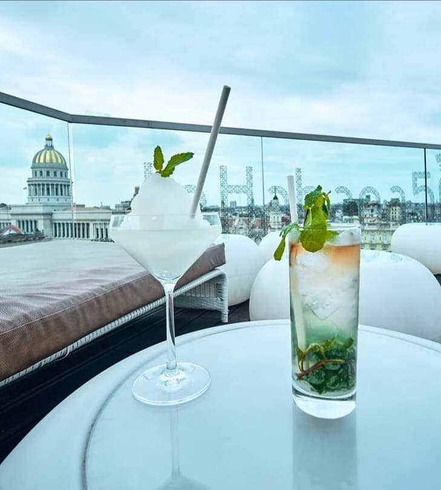

Mochito a daiquiri. Najslávnejšie koktaily sveta pochádzajú z Kuby. Odkedy sme prišli domov z tejto nezabudnuteľnej dovolenky, každú návštevu hostím mochitom. Robím ho podľa tradičného receptu, ale občas aj experimentujem. Práve pri jednom takom experimente som prišla k prekvapivému zisteniu, že najchutnejšie mochito spravíte, keď minerálku nahradite Spritom a je jedno, či použijete biely rum, alebo hnedý rum. Musíte však použiť kubánsky, inak to nebude mochito.
Toto mochito sme si vychutnali v centre Havany na streche hotela.
.
#mochito #daiquiri #coctails #koktaily #havana #kuba #bar
Koktaily podľa @abakitaa